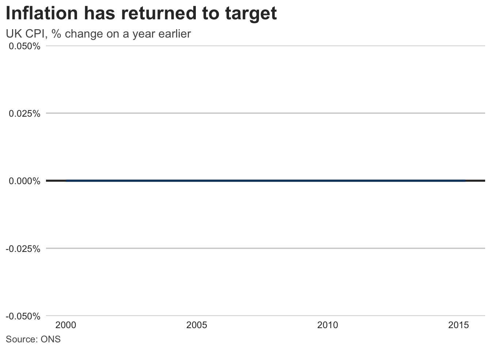

library(ggplot2)
# 03-color-palettes.qmd — categorical default (UK Analysis Function order)
palette_categorical <- c(
"#12436D",
"#28A197",
"#801650",
"#F46A25",
"#3D3D3D",
"#A285D1"
)
# Okabe–Ito alternative (also available as grDevices::palette.colors(palette = "Okabe-Ito"))
palette_okabe_ito <- c(
"#000000",
"#E69F00",
"#56B4E9",
"#009E73",
"#F0E442",
"#0072B2",
"#D55E00",
"#CC79A7"
)
palette_sequential <- c(
"#F2F2F2",
"#ADD1F1",
"#6BACE6",
"#2073BC",
"#12436D",
"#092135"
)
palette_highlight <- c(highlight = "#12436D", context = "#BFBFBF")
color_text <- "#333333"
color_text_soft <- "#555555"
color_gridline <- "#CBCBCB"
color_baseline <- "#333333"Implementation: R / ggplot2 / Quarto
Maps the standard onto a ggplot2 (≥ 4.0) + Quarto stack. The normative rules live in documents 01–05; this file shows one conforming implementation. Patterned on the BBC’s bbplot/cookbook approach.
1 Palettes as constants
2 Theme (P-4, TY-2/3/7/8)
theme_report <- function(base_size = 12) {
ggplot2::theme_minimal(base_size = base_size) +
ggplot2::theme(
# finding-first title block, left-aligned to the plot edge (TY-2)
plot.title.position = "plot",
plot.title = ggplot2::element_text(face = "bold", size = base_size * 1.6),
plot.subtitle = ggplot2::element_text(color = color_text_soft),
plot.caption = ggplot2::element_text(color = color_text_soft, hjust = 0),
plot.caption.position = "plot",
# y gridlines only, light grey (P-4, TY-7)
panel.grid.major.x = ggplot2::element_blank(),
panel.grid.minor = ggplot2::element_blank(),
panel.grid.major.y = ggplot2::element_line(color = color_gridline),
axis.title = ggplot2::element_blank(), # units go in the subtitle (TY-11)
axis.text = ggplot2::element_text(color = color_text),
# legend top, no title; prefer direct labels anyway (TY-6)
legend.position = "top",
legend.title = ggplot2::element_blank(),
text = ggplot2::element_text(color = color_text)
)
}3 Scales
scale_color_report <- function(...) {
ggplot2::scale_color_manual(values = palette_categorical, ...)
}
scale_fill_report <- function(...) {
ggplot2::scale_fill_manual(values = palette_categorical, ...)
}
# Sequential/continuous: viridis is a conforming perceptually-uniform default
# (03 — sequential): ggplot2::scale_fill_viridis_c()4 A conforming chart
# Use economics dataset and compute a rate-like variable for demonstration
inflation <- data.frame(
date = economics$date[economics$date >= as.Date("2000-01-01")],
rate = (economics$pce[economics$date >= as.Date("2000-01-01")] /
lag(economics$pce[economics$date >= as.Date("2000-01-01")], 12) -
1) *
100
)
plot_inflation <- inflation |>
ggplot(aes(date, rate)) +
geom_hline(yintercept = 0, linewidth = 1, color = color_baseline) + # TY-8
geom_line(linewidth = 1, color = palette_categorical[[1]]) + # AX-11
scale_y_continuous(labels = scales::label_percent(scale = 1)) +
labs(
title = "Inflation has returned to target", # P-2: the finding
subtitle = "UK CPI, % change on a year earlier", # TY-1: measure + unit
caption = "Source: ONS" # P-7 / TY-15
) +
theme_report()Highlight-vs-context pattern (CO-5, CT-A7): map the featured series to palette_highlight[["highlight"]] and all others to palette_highlight[["context"]], then label directly with geom_text() / ggrepel instead of a legend.
Small multiples (CT-3): facet_wrap(vars(category)) with fixed scales unless a documented reason requires scales = "free_y".
5 Quarto integration
Alt text (AX-6/7) — every figure chunk sets
fig-alt:plot_inflation
HTML-native titles (TY-5, AX-8) — for web output, prefer the page’s heading and lead paragraph to carry title/context, and emit SVG:
knitr: opts_chunk: dev: "svglite".Theme discipline — define
theme_report(), palettes, and scale helpers once in a sourcedR/theme.R(or an internal package), never inline per chunk; setggplot2::theme_set(theme_report())in a setup chunk.Brand — a
_brand.ymlcan carry the palette for non-ggplot outputs (tables, value boxes) so HTML components and charts share hex codes.
6 Verification helper
Contrast checking (AX-1/2) without leaving R:
contrast_ratio <- function(fg, bg = "#FFFFFF") {
lum <- function(hex) {
rgb <- grDevices::col2rgb(hex)[, 1] / 255
lin <- ifelse(rgb <= 0.03928, rgb / 12.92, ((rgb + 0.055) / 1.055)^2.4)
sum(lin * c(0.2126, 0.7152, 0.0722))
}
l <- sort(c(lum(fg), lum(bg)), decreasing = TRUE)
(l[[1]] + 0.05) / (l[[2]] + 0.05)
}
palette_categorical |> purrr::map_dbl(contrast_ratio) # all >= 3[1] 10.246867 3.165013 9.774534 3.028141 10.862247 3.082805Colorblind simulation: colorblindr::cvd_grid(plot_inflation) or colorspace::simulate_cvd().